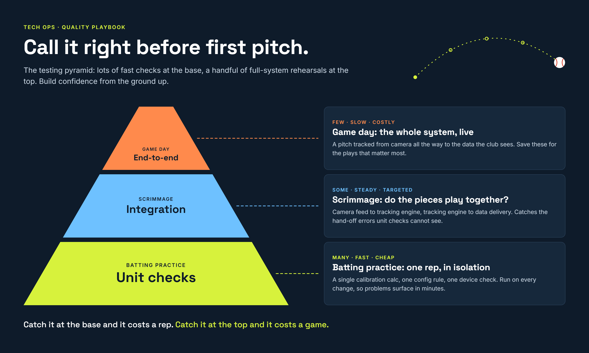

TECH OPS · QUALITY PLAYBOOK
The testing pyramid: lots of fast checks at the base, a handful of full-system rehearsals at the top. Build confidence from the ground up.

Open the full-size imageA pitch tracked from camera all the way to the data the club sees. These prove the full chain works, but they take the longest to run and to diagnose. Save them for the plays that matter most.
Camera feed to tracking engine, tracking engine to data delivery. They catch the hand-off errors that unit checks cannot see, such as a changed format or a missed connection.
A single calibration calc, one config rule, one device check. Run them on every change, so problems surface in minutes.
Catch it at the base and it costs a rep. Catch it at the top and it costs a game.
Why the shape matters: the higher a test sits, the slower and more costly it is to run and to fix what it finds. Most checks belong at the base, where they are cheap enough to run on every change. A team whose tests are mostly at the top (an upside-down pyramid) finds problems late and waits longer for answers.